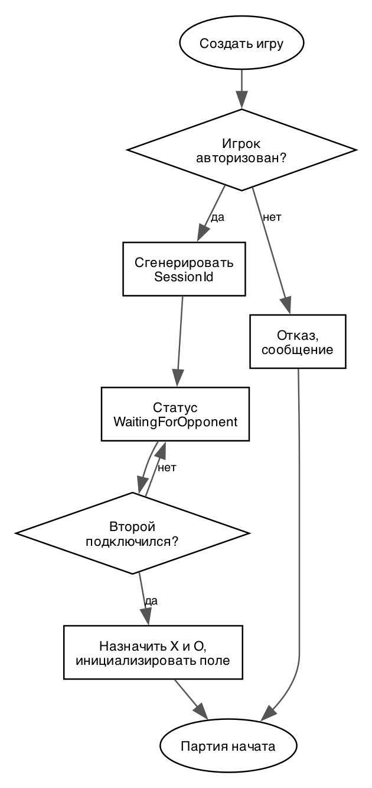
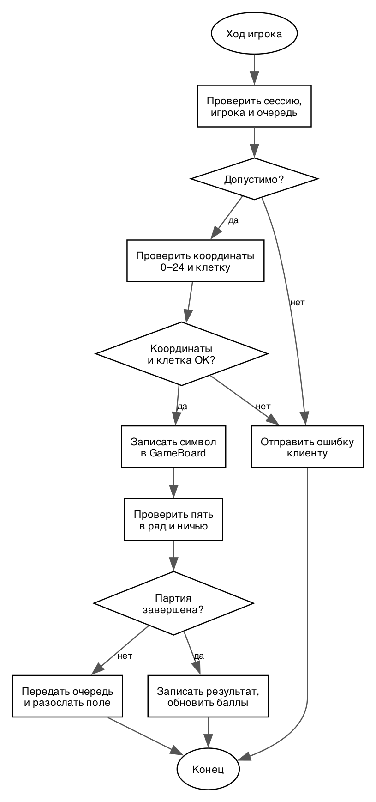

Схема алгоритма и программы
Министерство науки и высшего образования Российской Федерации
Автономная некоммерческая организация профессиональная
образовательная организация Московский международный колледж
цифровых технологий «Академия ТОП»
Факультет Информационных систем и программирования
Кафедра Разработка программного обеспечения
| СОГЛАСОВАНО Руководитель проекта от кафедры, преподаватель _________ /Д. В. Золотухин / «___» ____________ 2026 г. | УТВЕРЖДАЮ Заведующий выпускающей кафедрой ________ / И. О. Фамилия / «___» ___________ 2026 г. |
|---|---|
СХЕМА АЛГОРИТМА И ПРОГРАММЫ
на разработку программного комплекса
«Крестики и нолики»
Код документа: САП.001.2026
| Листов: 13 | Исполнители (разработчики): Студенты группы 9/3 – РПО 24/2 __________ / К. Д. Бызов/ «11» ноября 2026 г. |
|---|---|
МОСКВА — 2026 г.
1. Перечень алгоритмов программы
В состав программы входят алгоритмы, обеспечивающие авторизацию, управление игровыми сессиями, обработку ходов, проверку победы, фильтрацию сообщений и подсчёт баллов. Перечень приведён в таблице 1.
Таблица 1 — Перечень основных алгоритмов
| № | Алгоритм | Назначение | Вход | Выход |
|---|---|---|---|---|
| A1 | Авторизация | Проверка учётных данных и привязка соединения | Логин, пароль | Профиль, идентификатор |
| A2 | Создание сессии | Создание комнаты и ожидание соперника | Идентификатор игрока | SessionId, статус |
| A3 | Подключение к сессии | Добавление второго игрока и запуск партии | SessionId, игрок | Активная сессия |
| A4 | Обработка хода | Валидация и применение хода к полю 25 × 25 | SessionId, координаты | Новое состояние поля |
| A5 | Проверка победы | Поиск пяти символов в ряд и ничьей | Поле, последний ход | Победитель или ничья |
| A6 | Фильтрация сообщений чата | Замена запрещённых слов | Текст сообщения | Отфильтрованный текст |
| A7 | Подсчёт баллов | Обновление статистики и итогового счёта | Результат партии | Баллы, запись в БД |
2. Разбор каждого алгоритма
2.1. Алгоритм авторизации
Алгоритм проверяет заполненность полей, ищет пользователя в PostgreSQL, сравнивает хеш пароля и привязывает текущее соединение к идентификатору пользователя.
ФУНКЦИЯ Login(login, password) ЕСЛИ login = "" ИЛИ password = "": ОШИБКА "Заполните поля" user = SELECT * FROM Users WHERE Login = login ЕСЛИ user = NULL: ОШИБКА "Неверный логин или пароль" ЕСЛИ НЕ Verify(password, user.PasswordHash): ОШИБКА "Неверный логин или пароль" connection.UserId = user.UserId ВЕРНУТЬ LoadProfile(user.UserId)
2.2. Алгоритм создания сессии
Создаётся уникальный идентификатор комнаты, первый игрок назначается хостом, поле инициализируется пустыми клетками, статус — ожидание.
ФУНКЦИЯ CreateSession(userId) ЕСЛИ userId НЕ авторизован: ОШИБКА sessionId = INSERT INTO GameSessions (PlayerXId, BoardState, CurrentTurn, Status) VALUES (userId, EmptyBoardJson, 1, 'WaitingForOpponent') RETURNING SessionId session = { id: sessionId, playerX: userId, playerO: NULL, board: EmptyBoard(25, 25), turn: X, status: WAITING } sessions[sessionId] = session ВЕРНУТЬ sessionId
2.3. Алгоритм подключения второго игрока
Сервер проверяет существование сессии, её свободность и статус, добавляет второго игрока, назначает символы X и O и переводит сессию в активное состояние.
ФУНКЦИЯ JoinSession(sessionId, userId) session = sessions[sessionId] ЕСЛИ session = NULL: ОШИБКА "Сессия не найдена" ЕСЛИ session.playerO <> NULL: ОШИБКА "Сессия заполнена" updated = UPDATE GameSessions SET PlayerOId = userId, Status = 'Active' WHERE SessionId = sessionId AND Status = 'WaitingForOpponent' AND PlayerOId IS NULL ЕСЛИ updated = 0: ОШИБКА "Сессия уже заполнена" session.playerO = userId session.status = ACTIVE session.turn = X Broadcast(session, "start") ВЕРНУТЬ session
2.4. Алгоритм обработки хода
Алгоритм проверяет сессию, участника, очередь, диапазон координат 0–24 и свободность клетки, записывает символ, проверяет завершение партии и рассылает состояние.
ФУНКЦИЯ MakeMove(sessionId, userId, row, col) session = sessions[sessionId] ЕСЛИ session = NULL ИЛИ session.status <> ACTIVE: ОШИБКА "Партия завершена" ЕСЛИ userId НЕ В session.players: ОШИБКА "Вы не участник сессии" symbol = session.symbols[userId] ЕСЛИ session.turn <> symbol: ОШИБКА "Сейчас ход другого игрока" ЕСЛИ row < 0 ИЛИ row > 24 ИЛИ col < 0 ИЛИ col > 24: ОШИБКА "Координаты вне диапазона" ЕСЛИ session.board[row][col] <> EMPTY: ОШИБКА "Клетка уже занята" session.board[row][col] = symbol ЕСЛИ CheckWin(session, row, col, symbol): FinishGame(session, symbol) ИНАЧЕ ЕСЛИ IsFull(session.board): FinishGame(session, DRAW) ИНАЧЕ: session.turn = (X ЕСЛИ symbol = X ИНАЧЕ O) UPDATE GameSessions SET BoardState = BoardToJson(session.board), CurrentTurn = session.turn, Status = 'Active' WHERE SessionId = sessionId AND Status = 'Active' Broadcast(session, "state") ВЕРНУТЬ OK
2.5. Алгоритм определения победителя
Проверка выполняется вокруг последнего хода по четырём направлениям. Счётчик увеличивается, пока соседние клетки содержат тот же символ; при достижении пяти фиксируется победа.
ФУНКЦИЯ CheckWin(session, row, col, symbol) ДЛЯ (dr, dc) В [(0,1), (1,0), (1,1), (1,-1)]: count = 1 count += Count(row, col, dr, dc, symbol) count += Count(row, col, -dr, -dc, symbol) ЕСЛИ count >= 5: ВЕРНУТЬ TRUE ВЕРНУТЬ FALSE
ФУНКЦИЯ Count(row, col, dr, dc, symbol) n = 0 r = row + dr; c = col + dc ПОКА ВНУТРИ_ПОЛЯ(r, c) И board[r][c] = symbol: n = n + 1; r = r + dr; c = c + dc ВЕРНУТЬ n
2.6. Алгоритм обработки сообщений чата и фильтрации
Текст сообщения чата приводится к нижнему регистру, для каждого слова словаря строится шаблон с разделителями и похожими символами, найденные фрагменты заменяются на «***», после чего сообщение рассылается и сохраняется.
ФУНКЦИЯ Filter(text) ЕСЛИ Trim(text) = "": ВЕРНУТЬ NULL ДЛЯ каждого word В Dictionary: pattern = BuildPattern(word) text = RegexReplace(text, pattern, "***") ВЕРНУТЬ text
ФУНКЦИЯ BuildPattern(word) pattern = "" ДЛЯ каждого символа c В word: ЕСЛИ pattern <> "": pattern = pattern + "[\s\p{P}\p{S}]*" pattern = pattern + CharacterClass(c) // похожие буквы и цифры ВЕРНУТЬ pattern
2.7. Алгоритм подсчёта баллов
После завершения партии результат и статистика обновляются в одной транзакции PostgreSQL. Победа даёт 3 балла, ничья — 1, поражение — 0.
ФУНКЦИЯ FinishGame(session, winnerSymbol) ЕСЛИ winnerSymbol = X: bonusX = 3; bonusO = 0; winnerId = session.playerX ИНАЧЕ ЕСЛИ winnerSymbol = O: bonusX = 0; bonusO = 3; winnerId = session.playerO ИНАЧЕ: bonusX = 1; bonusO = 1; winnerId = NULL
BEGIN TRANSACTION inserted = INSERT INTO GameResults (SessionId, WinnerId, ResultType) VALUES (session.id, winnerId, CASE WHEN winnerId IS NULL THEN 'Draw' ELSE 'Win' END) ON CONFLICT (SessionId) DO NOTHING RETURNING ResultId ЕСЛИ inserted <> NULL: UPDATE UserProfiles SET GamesPlayed = GamesPlayed + 1, Wins = Wins + (CASE WHEN winnerId = session.playerX THEN 1 ELSE 0 END), Losses = Losses + (CASE WHEN winnerId = session.playerO THEN 1 ELSE 0 END), TotalScore = TotalScore + bonusX WHERE UserId = session.playerX UPDATE UserProfiles SET GamesPlayed = GamesPlayed + 1, Wins = Wins + (CASE WHEN winnerId = session.playerO THEN 1 ELSE 0 END), Losses = Losses + (CASE WHEN winnerId = session.playerX THEN 1 ELSE 0 END), TotalScore = TotalScore + bonusO WHERE UserId = session.playerO UPDATE GameSessions SET BoardState = BoardToJson(session.board), Status = 'Finished', FinishedAt = NOW() WHERE SessionId = session.id COMMIT SendResult(session, bonusX, bonusO)
3. Создание блок-схем для ключевых алгоритмов
3.1. Создание сессии
Алгоритм отвечает за создание изолированной игровой комнаты и является ключевым, потому что с него начинается любая партия. Переменные алгоритма приведены в таблице 2.
Таблица 2 — Переменные алгоритма создания сессии
| Имя | Тип | Область видимости | Назначение |
|---|---|---|---|
| sessionId | int | глобальная | Уникальный номер сессии |
| playerX, playerO | int | глобальная | Идентификаторы игроков |
| board | char[25,25] | глобальная | Состояние поля |
| turn | int | глобальная | Очередь: 1 — X, 2 — O |
| status | enum | глобальная | Статус сессии |
Схема приведена на рисунке 1.

Рисунок 1 — Алгоритм создания сессии
3.2. Обработка хода
Алгоритм проверяет допустимость хода и синхронизирует состояние поля. Переменные алгоритма приведены в таблице 3.
Таблица 3 — Переменные алгоритма обработки хода
| Имя | Тип | Область видимости | Назначение |
|---|---|---|---|
| sessionId | int | локальная | Идентификатор игровой сессии |
| userId | int | локальная | Идентификатор игрока |
| row, col | int | локальная | Координаты клетки (0–24) |
| symbol | char | локальная | Символ X или O |
| dr, dc | int | локальная | Направление проверки |
| count | int | локальная | Количество символов подряд |
| session | GameSession | локальная | Состояние партии |
Схема приведена на рисунке 2.

Рисунок 2 — Алгоритм обработки хода и синхронизации
3.3. Проверка победы и ничьей
Алгоритм определяет завершение партии по пяти символам в ряд или по заполнению поля. Блок-схема приведена на рисунке 3.

Рисунок 3 — Алгоритм проверки победы и ничьей
3.4. Фильтрация сообщений чата
Алгоритм заменяет запрещённые выражения с учётом разделителей и похожих символов. Переменные приведены в таблице 4.
Таблица 4 — Переменные алгоритма фильтрации
| Имя | Тип | Область видимости | Назначение |
|---|---|---|---|
| text | string | локальная | Исходный текст сообщения |
| pattern | string | локальная | Шаблон поиска с разделителями |
| word | string | локальная | Очередное слово словаря |
| dictionary | string[] | глобальная | Словарь запрещённых слов |
Схема приведена на рисунке 4.

Рисунок 4 — Алгоритм обработки и фильтрации сообщений
3.5. Авторизация
Алгоритм проверяет учётные данные и привязывает соединение к пользователю. Блок-схема приведена на рисунке 5.

Рисунок 5 — Алгоритм авторизации
4. Заключение
Схемы алгоритмов оформлены с учётом ГОСТ 19.701-90: используются блоки «начало/конец», «процесс», «решение», «данные» и «документ». Линии потока направлены сверху вниз или слева направо; каждое ветвление подписано «да» или «нет». Подписи рисунков размещены под изображениями.
Псевдокод приведён для однозначного понимания логики и не зависит от конкретного языка реализации. Имена переменных совпадают с именами в пояснительной записке и описании программы.